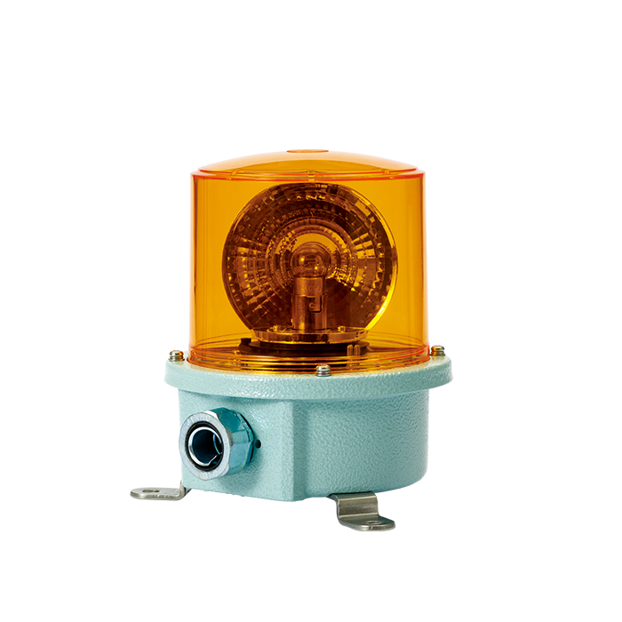

Đèn tháp tín hiệu Qlight
Đèn tháp LED Qlight cho máy công nghiệp, dây chuyền và tủ điều khiển: từ loại tiêu chuẩn Ø40–80 mm, loại modular lắp không cần dụng cụ, đến loại điều khiển qua USB, Ethernet và mạng không dâ
Tra 3.284 mã hàng Qlight theo part number, so sánh model theo điện áp, cấp bảo vệ và kiểu lắp, xem thông số theo catalog chính thức rồi gửi RFQ. Fast Group nhập trực tiếp từ nhà máy Qlight, đầy đủ CO/CQ.
Từ đèn tháp tín hiệu cho dây chuyền sản xuất đến thiết bị báo hiệu chống cháy nổ cho dầu khí — phân theo nhóm và series để tra đúng model và cấu hình.
Đèn tháp LED Qlight cho máy công nghiệp, dây chuyền và tủ điều khiển: từ loại tiêu chuẩn Ø40–80 mm, loại modular lắp không cần dụng cụ, đến loại điều khiển qua USB, Ethernet và mạng không dâ

Đèn cảnh báo Ø50–180 mm, còi báo điện tử tới 130 dB, thiết bị kết hợp đèn và còi, đèn thanh cho xe ưu tiên. Tra thông số, so sánh series và gửi RFQ cho Fast Group.

Đèn và còi báo cho môi trường khắc nghiệt: tàu biển, cảng, nhà máy thép, xe công trình và khung cẩu container. Vỏ nhôm hoặc inox, chịu rung mạnh, kín nước tới IP68.

Đèn báo, còi báo và đèn tháp đạt chuẩn phòng nổ cho giàn khoan, nhà máy lọc hóa dầu, kho xăng dầu và nhà máy hóa chất. Vỏ nhôm, thấu kính kính cường lực, IP66, chứng nhận ATEX và IECEx.

Chiếu sáng cho máy công cụ, tủ điện và dây chuyền: đèn làm việc chịu dầu cắt gọt, đèn thanh IP69K rửa được bằng nước nóng, đèn tủ điện đấu trực tiếp AC.

Dòng tối ưu chi phí của Qlight: beacon LED cỡ nhỏ phát ba màu trên một đèn và đèn làm việc thân nhôm. Vẫn giữ IP69K hoặc IP67 ở các bản tiêu chuẩn.

Đèn báo hiệu nối được vào hệ điều khiển: IO-Link V1.1 qua đầu nối M12 cho máy mới, mạng không dây IEEE 802.15.4 cho máy cũ không có cổng dữ liệu.

Công tắc hành trình hạng nặng thân inox STS316L cho cầu trục, băng tải lớn, thiết bị boong tàu và nhà máy hóa chất — nơi công tắc thép mạ hỏng sau một mùa.
Các dòng thông dụng cho nhà máy sản xuất, dây chuyền tự động, dầu khí và hàng hải.
Ø100mm LED Revolving Warning Light Max.90dB

Ø100mm Bulb Revolving Warning Light Max.90dB

Ø100mm Bulb Revolving Warning Light Max.90dB

Ø125mm LED Revloving Warning Light Max.90dB

Ø125mm Bulb Revolving Warning Light Max.90dB

Ø80mm LED Revolving Warning Light Max.90dB

Ø80mm LED Revolving Warning Light Max.90dB

Ø80mm Bulb Revolving Warning Light Max.90dB
Giấy chứng nhận số QKO724_COD-FAST GROUP ENGINEERING_290911 do Qlight Co., Ltd. cấp, xác nhận Fast Group Engineering là nhà phân phối sản phẩm Qlight tại Việt Nam.
Có. Qlight Co., Ltd. đã cấp cho Fast Group Engineering Certificate of Distributor số QKO724_COD-FAST GROUP ENGINEERING_290911. Hàng nhập trực tiếp từ nhà máy Qlight, đầy đủ chứng từ nhập khẩu và CO/CQ theo từng lô.
Không. Đây là portal do Fast Group Engineering vận hành độc lập để hỗ trợ tra cứu mã hàng, tư vấn cấu hình và báo giá Qlight tại Việt Nam. Trang chính thức của hãng là qlight.com.
Nhập part number vào ô tra mã ở đầu trang — ví dụ QTG50L-3-24, ST45L-BZ hoặc QWCD50. Portal có đủ 3.284 mã hàng trong catalog Qlight, mỗi mã một trang riêng kèm điện áp, màu, cấp bảo vệ và kiểu lắp.
Mã hàng đầy đủ (hoặc model kèm điện áp, màu, số tầng, kiểu lắp), số lượng, nơi giao hàng và yêu cầu chứng từ. Đủ các mục này thì báo giá được lập ngay trong ngày làm việc.
Có. Dòng Explosion Proof Signalings của Qlight đạt ATEX/IECEx, gồm đèn báo, còi báo và thiết bị kích hoạt bằng điện thoại cho khu vực nguy hiểm — phù hợp giàn khoan, nhà máy lọc hóa dầu và kho xăng dầu.